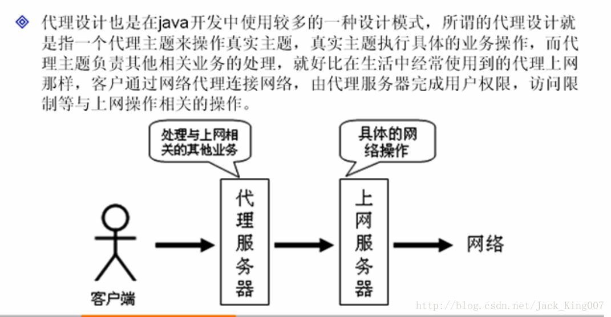
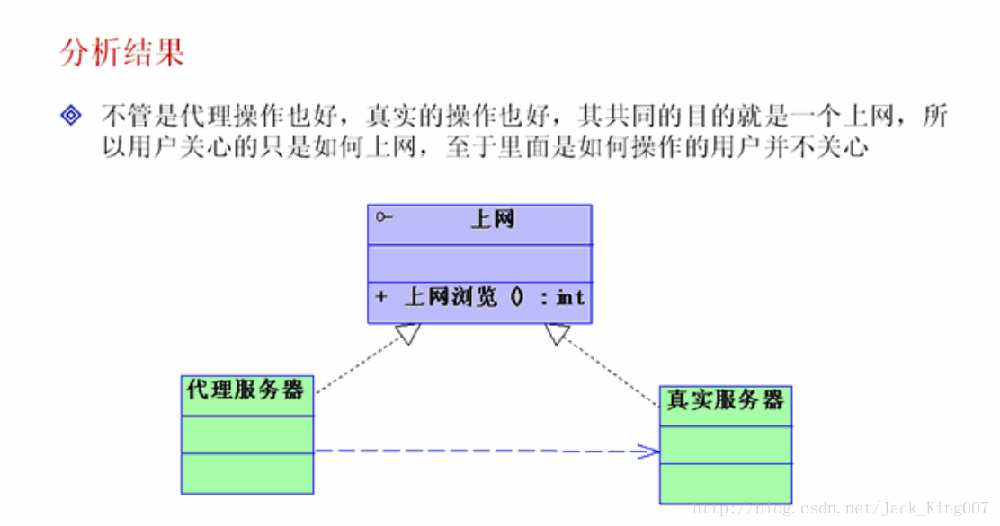
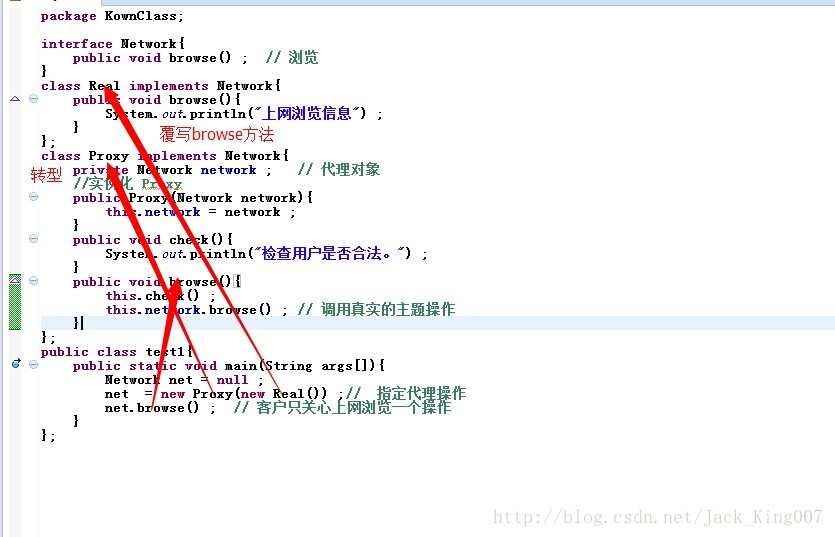
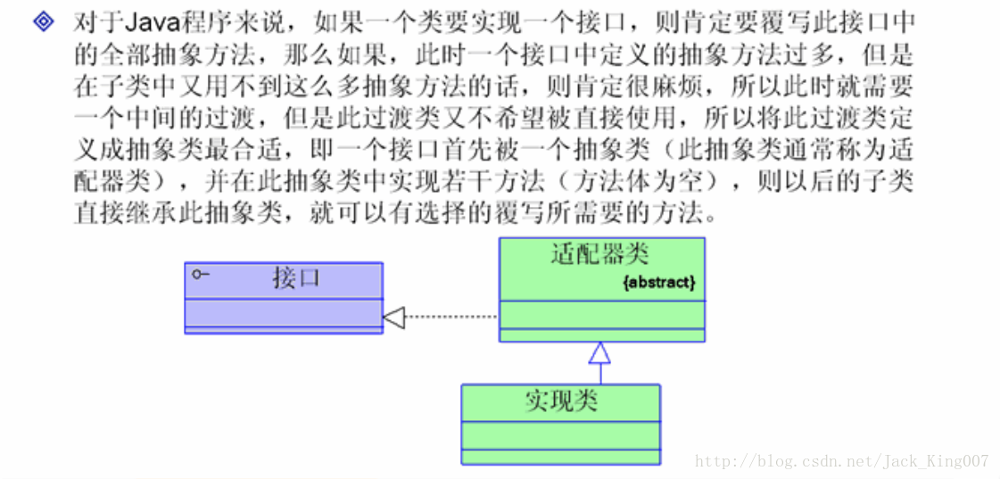
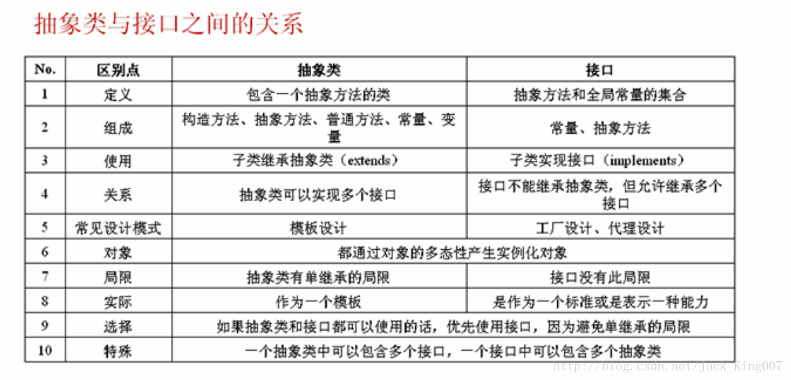

java基础之抽象类与接口的应用（二）
（1）代理设计模式的作用


2.适配器设计模式的作用

package KownClass;
interface Window{ // 定义Window接口，表示窗口操作
public void open() ; // 打开
public void close() ; // 关闭
public void activated() ; // 窗口活动
public void iconified() ; // 窗口最小化
public void deiconified();// 窗口恢复大小
}
abstract class WindowAdapter implements Window{
public void open(){} ; // 打开
public void close(){} ; // 关闭
public void activated(){} ; // 窗口活动
public void iconified(){} ; // 窗口最小化
public void deiconified(){};// 窗口恢复大小
};
class WindowImpl extends WindowAdapter{
public void open(){
System.out.println("窗口打开。") ;
}
public void close(){
System.out.println("窗口关闭。") ;
}
};
public class test1{
public static void main(String args[]){
Window win = new WindowImpl() ;
win.open() ;
win.close() ;
}
};4.抽象类与接口的使用区别

重要提醒
在开发中，一个类永远不要去继承一个已经实现好的类，要么继承抽象类，要么
继承接口，如果接口和抽象类都可以使用的话，那么优先使用接口 避免单继承的情况
总结
抽象类和接口的实例化，通过对象多态性
抽象类表示一个模板 接口指定的是一个标准
常见的设计模式：模板设计，工厂设计，代理设计，适配器设计